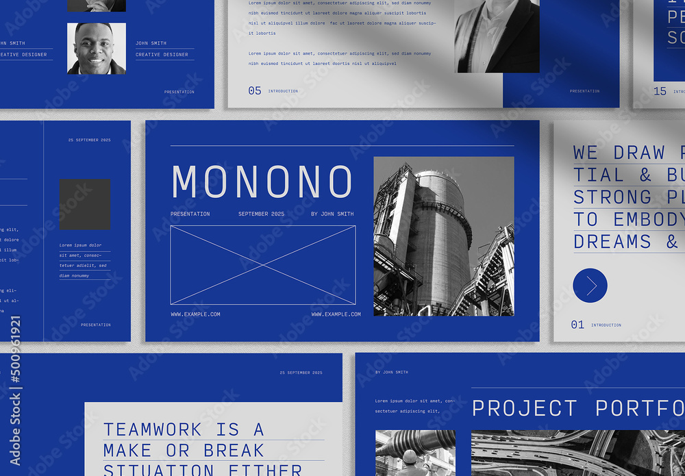

Portfolio by Maya Patel
HCDE'26
"Hello! I'm Maya Patel, and I'm on a journey to become a UX designer. I'm deeply passionate about creating digital experiences that are not only visually appealing but also intuitive and user-friendly. I'm excited to merge my creative flair with analytical thinking to craft solutions that delight users and meet their needs. Through my work, I aim to make technology more accessible and enjoyable for everyone."
*Fake author description created by ChatGPT*